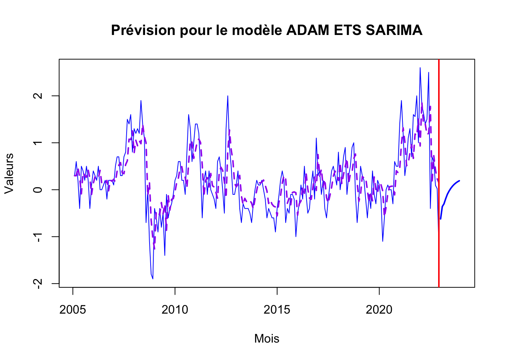
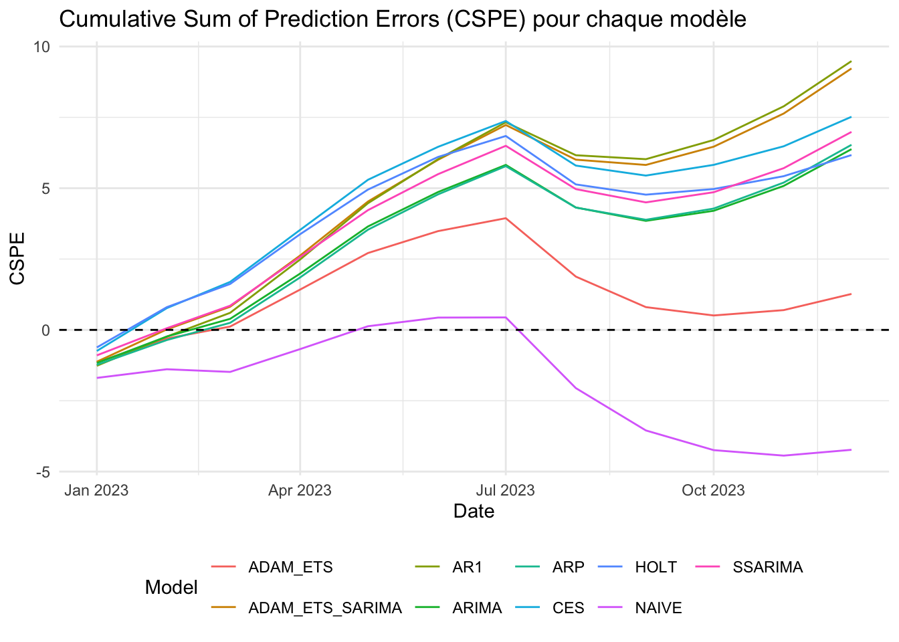

suppressPackageStartupMessages({
library(readxl)
library(tsoutliers)
library(TSA)
library(seastests)
library(forecast)
library(seasonal)
library(RJDemetra)
library(ggplot2)
library(EnvStats)
library(tseries)
library(smooth)
library(timeSeries)
library(plotly)
library(dplyr)
library(tidyr)
library(Kendall)
library(here)
})Techniques de prévision et conjoncture
Séries temporelles
ARIMA
ADAM
ARMAX
CES
LED
Évolution de l’indice des prix d’achat des moyens de production agricole en France
Janvier 2005 – Décembre 2023
Résumé
L’indice des Prix d’Achat des Moyens de Production Agricole (IPAMPA) joue un roÌ‚le treÌ€s important dans l’eÌconomie agricole en offrant un aperçu des couÌ‚ts auxquels les agriculteurs sont confronteÌs. En 2023, les agriculteurs europeÌens en Pologne, Roumanie, Slovaquie, Hongrie, Bulgarie, ainsi qu’en France, ont eÌteÌ confronteÌs aÌ€ des deÌfis marqueÌs par des conditions climatiques extreÌ‚mes et une forte concurrence due aux importations aÌ€ bas prix en provenance de l’Ukraine, consideÌreÌes comme une « concurrence deÌloyale ». Ces tensions surviennent apreÌ€s une anneÌe 2022 difficile, marqueÌe par des reÌserves en eau basses et des perturbations climatiques qui ont fortement impacteÌ les rendements agricoles.
Dans ce contexte, comprendre l’eÌvolution de l’IPAMPA ne concerne pas uniquement les acteurs du secteur agricole. En effet, les variations de cet indice ont eÌgalement des reÌpercussions sur les prix aÌ€ la consommation. Tout changement dans les couÌ‚ts de production se reÌpercute, apreÌ€s un certain deÌlai, sur les prix finaux, influençant ainsi le couÌ‚t de la vie geÌneÌrale. Face aÌ€ cette complexiteÌ, notre projet s’est concentreÌ sur la preÌvision de l’IPAMPA aÌ€ l’aide de plusieurs modeÌ€les de preÌvision statistique. Nous avons exploreÌ diverses approches pour identifier le modeÌ€le le plus performant en fonction des speÌcificiteÌs de nos donneÌes.
L’objectif principal de notre eÌtude a eÌteÌ de confronter ces modeÌ€les aux donneÌes reÌelles afin d’eÌvaluer leur capaciteÌ aÌ€ preÌdire preÌciseÌment les fluctuations de l’IPAMPA. Ce processus nous permet non seulement de comprendre les deÌfis associeÌs aÌ€ la preÌvision de cet indice, mais aussi d’appreÌhender les difficulteÌs aÌ€ deÌvelopper un outil preÌdictif fiable.
Vous avez la possibilité de télécharger le document ici :) 📥 Télécharger le fichier PDF
Présentation du code
Je vous présente ci-dessous, le code utilisé pour mener à bien ce projet, avec les étapes et explications correspondantes.
Analyse exploratoire
Librairies
Récupération des données
ipampa1 <- read_excel(here("data", "serie_ipampa.xlsx"), sheet = 'complete')
ipampa <- read_excel(here("data", "serie_ipampa.xlsx"))
str(ipampa)tibble [216 × 2] (S3: tbl_df/tbl/data.frame)
$ Période: chr [1:216] "2022-12" "2022-11" "2022-10" "2022-09" ...
$ IPAMPA : num [1:216] 140 141 142 140 139 ...ipampa <- ipampa[nrow(ipampa):1,]
ipampa <- ipampa[, 2]
ipampa# A tibble: 216 × 1
IPAMPA
<dbl>
1 78.2
2 78.5
3 79.1
4 79.3
5 78.9
6 79.4
7 79.8
8 80
9 80.5
10 80.7
# ℹ 206 more rowsCréation de la série temporelle
ipampa <- ts(data = ipampa, start = c(2005, 01), frequency=12) Visualisation
show(ipampa) Jan Feb Mar Apr May Jun Jul Aug Sep Oct Nov Dec
2005 78.2 78.5 79.1 79.3 78.9 79.4 79.8 80.0 80.5 80.7 80.3 80.4
2006 80.8 81.1 81.3 81.8 81.8 81.8 81.9 82.1 81.9 82.1 82.3 82.5
2007 82.6 83.1 83.8 84.5 84.8 85.1 85.8 86.6 88.1 89.5 91.1 91.9
2008 93.2 94.4 95.7 96.9 98.8 100.2 101.3 100.6 100.6 99.5 97.7 95.8
2009 95.4 94.8 93.9 93.5 92.7 92.2 90.8 90.7 90.1 89.7 89.4 89.3
2010 89.5 89.8 90.4 91.0 91.2 91.4 91.3 92.1 93.7 95.0 95.6 96.6
2011 98.0 99.4 100.6 101.0 100.4 100.6 101.0 100.9 101.3 101.3 101.2 101.0
2012 100.6 101.2 101.9 102.3 102.3 101.8 103.1 105.1 106.0 106.5 106.4 106.3
2013 106.4 106.8 106.4 105.7 105.4 105.0 104.6 104.2 103.7 103.0 102.7 102.7
2014 102.9 103.0 103.1 103.3 103.3 103.1 102.5 102.1 101.6 101.0 100.4 99.5
2015 99.1 100.5 100.7 101.1 101.3 100.6 100.2 99.7 99.6 99.5 99.3 98.3
2016 97.8 97.5 97.6 97.4 97.9 97.8 97.3 96.9 97.0 97.4 97.2 98.3
2017 98.6 99.0 98.9 99.1 98.7 98.1 97.9 98.0 98.4 98.9 99.2 99.3
2018 100.1 100.1 100.4 101.1 102.0 101.9 102.2 102.7 103.6 104.6 104.5 103.8
2019 103.6 104.1 104.4 104.6 104.4 103.8 103.7 103.3 103.7 103.6 103.3 103.5
2020 103.6 103.4 102.3 101.7 101.7 101.8 101.8 101.8 101.5 102.1 102.6 103.1
2021 104.5 106.4 107.6 107.9 108.5 109.6 110.9 111.6 113.2 117.5 119.5 120.5
2022 123.1 124.9 133.2 134.6 136.1 138.6 138.2 138.9 139.5 142.0 141.3 139.6plot(ipampa, xlab = "Années", ylab ="indice 'IPAMPA'", main= "Série brute")Graphique avec ggplot
ts_df <- data.frame(Date = time(ipampa), Value = as.numeric(ipampa))
# graphique ggplot
ggplot(data = ts_df, aes(x = Date, y = Value)) +
geom_line(aes(color = Value)) +
scale_color_gradient(low = "darkgreen", high = "red") +
labs(title = "
Indice mensuel des prix d'achat
des moyens de production agricole (IPAMPA)",
x = "Période\n(01/2005 - 12/2022)", y = "Indice") +
theme_minimal() +
theme(legend.position = "right",
plot.title = element_text(size = 8),
axis.title.x = element_text(size = 8),
axis.title.y = element_text(size = 8),
legend.title = element_text(size = 7)) Don't know how to automatically pick scale for object of type <ts>. Defaulting
to continuous.Détection outliers
# Automatic Procedure for Detection of Outliers
tso(ipampa)Series: ipampa
Regression with ARIMA(1,1,1) errors
Coefficients:
ar1 ma1 LS122 LS202 LS207 TC214
0.8434 -0.2691 1.5395 2.7421 6.6747 2.4083
s.e. 0.0531 0.1062 0.4497 0.4520 0.4505 0.3936
sigma^2 = 0.2814: log likelihood = -166.1
AIC=346.2 AICc=346.74 BIC=369.79
Outliers:
type ind time coefhat tstat
1 LS 122 2015:02 1.539 3.423
2 LS 202 2021:10 2.742 6.067
3 LS 207 2022:03 6.675 14.817
4 TC 214 2022:10 2.408 6.119fit <- tso(ipampa)
plot(fit)show(fit)Series: ipampa
Regression with ARIMA(1,1,1) errors
Coefficients:
ar1 ma1 LS122 LS202 LS207 TC214
0.8434 -0.2691 1.5395 2.7421 6.6747 2.4083
s.e. 0.0531 0.1062 0.4497 0.4520 0.4505 0.3936
sigma^2 = 0.2814: log likelihood = -166.1
AIC=346.2 AICc=346.74 BIC=369.79
Outliers:
type ind time coefhat tstat
1 LS 122 2015:02 1.539 3.423
2 LS 202 2021:10 2.742 6.067
3 LS 207 2022:03 6.675 14.817
4 TC 214 2022:10 2.408 6.119Série corrigée
par(mfrow=c(1,1))
# outlier-adjusted series
ipampa <- fit$yadj
plot(ipampa, main= "Série adjustée", xlab= "Années", ylab ="indice 'IPAMPA")Existence de 4 outliers 3 type LS et un type TC
Tests de saisonnalité
# Friedman test
ft <- fried(ipampa)
show(ft)Test used: Friedman rank
Test statistic: 15.81
P-value: 0.1485093# Testing the seasonality of series
# a boolean value is returned : TRUE or FALSE
is <- isSeasonal(ipampa, test="wo")
show(is)[1] FALSE# Kruskal-Wallis test
kwt <- kw(ipampa)
show(kwt)Test used: Kruskall Wallis
Test statistic: 10.94
P-value: 0.4482418# Seasonal dummies
# impotant
sd <- seasdum(ipampa)
show(sd)Test used: SeasonalDummies
Test statistic: 0.86
P-value: 0.5759353# Webel-Ollech test
# Webel-Ollech test - new version of seastests (2021-09)
# impotant
wot <- combined_test(ipampa)
show(wot)Test used: WO
Test statistic: 0
P-value: 1 1 0.03397038Les tests confirment la non saisonnalité de la série IPAMPA
Graphique
# Trace une série chronologique avec son acf et soit son pacf, son nuage de points décalé ou son spectre
ggtsdisplay(ipampa, plot.type="histogram")# Trace un graphique saisonnier où les données sont comparées aux saisons d'années distinctes
# ggseasonplot(ipampa_ts, col=rainbow(12), year.labels=TRUE)Vérification de la stationnarité
stationnarité de ipampa
adf.test(ipampa)
Augmented Dickey-Fuller Test
data: ipampa
Dickey-Fuller = -3.1388, Lag order = 5, p-value = 0.09931
alternative hypothesis: stationaryLa série n’est pas stationnaire car le test ADF > 0.05
Vu que notre série ne presente pas de saisonalité, nous allons faire un analyse sur la tendance
decomp <- decompose(ipampa)
plot(decomp)
Tendance
# test de tendence serie niveau
MannKendall(ipampa)tau = 0.568, 2-sided pvalue =< 2.22e-16Dans notre cas, τ = 0.568 suggère une tendance croissante modérément forte dans la série temporelle à niveau, avec un p_value inférieur à 0,05 on peut dire que la série initial presente bien une tendance
differentiation de la série
d_ipampa <- diff(ipampa, differences = 1)# graphique ggplot
df <- data.frame(Date = time(d_ipampa), Value = as.numeric(d_ipampa))
# graphique ggplot
ggplot(data = df, aes(x = Date, y = Value)) +
geom_line(aes(color = Value)) +
scale_color_gradient(low = "darkgreen", high = "red") +
labs(title = "Série differenciée",
x = "Dates", y = "Indice") +
theme_minimal() +
theme(legend.position = "right",
plot.title = element_text(size = 8),
axis.title.x = element_text(size = 8),
axis.title.y = element_text(size = 8),
legend.title = element_text(size = 7)) Don't know how to automatically pick scale for object of type <ts>. Defaulting
to continuous.Correlogramme série brute et série differencié
par(mfrow=c(1,2))
acf(ipampa, main="Correlogramme sur la série en niveau")
acf(d_ipampa, main="Correlogramme sur la série en différence première")Periodogramme
# Periodogramme
par(mfrow=c(1,2))
periodogram(ipampa, main="Periodogramme sur la série en niveau")
periodogram(d_ipampa, main="Periodogramme sur la série en différence première")Test de stationnarité de la série différencié ipampa
adf.test(d_ipampa)
Augmented Dickey-Fuller Test
data: d_ipampa
Dickey-Fuller = -3.564, Lag order = 5, p-value = 0.0378
alternative hypothesis: stationaryApres la différentiation la série devient bien stationnaire
decomp <- decompose(ipampa)
decomp_d <- decompose(d_ipampa)
graph1 <- plot(decomp)graph2 <- plot(decomp_d)
Statistiques descriptives
summary(d_ipampa) y
Min. :-1.9000
1st Qu.:-0.2500
Median : 0.2000
Mean : 0.2291
3rd Qu.: 0.6000
Max. : 2.6000 #histogramme
hist(d_ipampa, main= "Histogramme série corrigé", ylab=" Fréquence", xlab="indice")#skewness
PerformanceAnalytics::skewness(d_ipampa)[1] 0.4496658#kurtosis
PerformanceAnalytics::kurtosis(d_ipampa)[1] 0.6254732e1071::kurtosis(d_ipampa)[1] 0.5918263#normalité
stats::shapiro.test(d_ipampa)
Shapiro-Wilk normality test
data: d_ipampa
W = 0.97467, p-value = 0.0006498#boxplot
boxplot(d_ipampa, main="Boxplot")#test outliers
rosnerTest(d_ipampa, k=10)
Results of Outlier Test
-------------------------
Test Method: Rosner's Test for Outliers
Hypothesized Distribution: Normal
Data: d_ipampa
Sample Size: 215
Test Statistics: R.1 = 3.233268
R.2 = 3.183835
R.3 = 3.006058
R.4 = 2.934315
R.5 = 2.627525
R.6 = 2.678351
R.7 = 2.579619
R.8 = 2.628374
R.9 = 2.522953
R.10 = 2.523867
Test Statistic Parameter: k = 10
Alternative Hypothesis: Up to 10 observations are not
from the same Distribution.
Type I Error: 5%
Number of Outliers Detected: 0
i Mean.i SD.i Value Obs.Num R.i+1 lambda.i+1 Outlier
1 0 0.2291333 0.7332725 2.6 204 3.233268 3.627118 FALSE
2 1 0.2180544 0.7167286 2.5 209 3.183835 3.625734 FALSE
3 2 0.2073411 0.7010315 -1.9 47 3.006058 3.624342 FALSE
4 3 0.2172814 0.6874795 -1.8 46 2.934315 3.622942 FALSE
5 4 0.2268419 0.6748397 2.0 91 2.627525 3.621535 FALSE
6 5 0.2183983 0.6651861 2.0 202 2.678351 3.620120 FALSE
7 6 0.2098739 0.6551844 1.9 193 2.579619 3.618697 FALSE
8 7 0.2017483 0.6461226 1.9 40 2.628374 3.617266 FALSE
9 8 0.1935442 0.6367363 1.8 205 2.522953 3.615828 FALSE
10 9 0.1857459 0.6283000 -1.4 54 2.523867 3.614381 FALSELe test de shapiro, indique que notre série ne suit pas une loi normal
Le box plot nous indique des possibles outliers. La vérification avec le test de rosner nous indique que finalement il n’y pas
Estimation des modèles linéaires
Modèles AR(1), AR(p) et ARIMA(p,d,q) et de la méthode LED Holt-Winters, ADAM ETS, ADAM ETS SARIMA, SSARIMA et CES
Modèle AR(1)
# Parametres modele AR(1)
ar1 <- auto.arima(d_ipampa, max.p=1, max.q=0, d=0, stationary = TRUE, seasonal = FALSE, ic = "aic", stepwise = TRUE, trace = TRUE)
Fitting models using approximations to speed things up...
ARIMA(1,0,0) with non-zero mean : 341.619
ARIMA(0,0,0) with non-zero mean : 479.739
ARIMA(1,0,0) with non-zero mean : 341.619
ARIMA(0,0,0) with zero mean : 497.859
ARIMA(1,0,0) with zero mean : 342.4367
Now re-fitting the best model(s) without approximations...
ARIMA(1,0,0) with non-zero mean : 341.299
Best model: ARIMA(1,0,0) with non-zero mean # Estimation
summary(ar1)Series: d_ipampa
ARIMA(1,0,0) with non-zero mean
Coefficients:
ar1 mean
0.6966 0.2150
s.e. 0.0492 0.1172
sigma^2 = 0.2802: log likelihood = -167.65
AIC=341.3 AICc=341.41 BIC=351.41
Training set error measures:
ME RMSE MAE MPE MAPE MASE ACF1
Training set -0.000387161 0.526914 0.3958932 NaN Inf 0.5050639 -0.08971407checkresiduals(ar1)
Ljung-Box test
data: Residuals from ARIMA(1,0,0) with non-zero mean
Q* = 24.914, df = 23, p-value = 0.3548
Model df: 1. Total lags used: 24Nombre de retards pour le test Ljung-BOx: 24, ce test permet de vérifier si les résidus de notre modèle sont effectivement du bruit blanc (c’est-à -dire non corrélés et avec une moyenne constante et une variance constante). Ici la P_value est de 0,354 donc > 0,05 ; Il n’y a pas suffisamment de preuves pour rejeter l’hypothèse selon laquelle les résidus du modèle ARIMA(1,0,0) sont indépendants. Les résidus du modèle ne présentent pas d’autocorrélation significative à aucun des décalages testés.
Modèle AR(p)
# Parametres modele AR(p)
arp <- auto.arima(d_ipampa, max.q=0, d=0, stationary = TRUE, seasonal = FALSE, ic = "aic", stepwise = TRUE, trace = TRUE)
Fitting models using approximations to speed things up...
ARIMA(2,0,0) with non-zero mean : 340.2507
ARIMA(0,0,0) with non-zero mean : 479.739
ARIMA(1,0,0) with non-zero mean : 341.619
ARIMA(0,0,0) with zero mean : 497.859
ARIMA(3,0,0) with non-zero mean : 342.3594
ARIMA(2,0,0) with zero mean : 340.1487
ARIMA(1,0,0) with zero mean : 342.4367
ARIMA(3,0,0) with zero mean : 342.0625
Now re-fitting the best model(s) without approximations...
ARIMA(2,0,0) with zero mean : 339.5992
Best model: ARIMA(2,0,0) with zero mean # Estimation
summary(arp)Series: d_ipampa
ARIMA(2,0,0) with zero mean
Coefficients:
ar1 ar2
0.6144 0.1489
s.e. 0.0680 0.0680
sigma^2 = 0.2779: log likelihood = -166.8
AIC=339.6 AICc=339.71 BIC=349.71
Training set error measures:
ME RMSE MAE MPE MAPE MASE ACF1
Training set 0.04941427 0.5246927 0.3970709 NaN Inf 0.5065663 -0.01668794checkresiduals(arp)
Ljung-Box test
data: Residuals from ARIMA(2,0,0) with zero mean
Q* = 21.585, df = 22, p-value = 0.4849
Model df: 2. Total lags used: 24Modèle ARIMA(p,d,q)
# Parametres modele AR(p,d,q)
arima <- auto.arima(d_ipampa, stationary = TRUE, seasonal = FALSE, ic = "aic", stepwise = TRUE, trace = TRUE)
Fitting models using approximations to speed things up...
ARIMA(2,0,2) with non-zero mean : 342.5512
ARIMA(0,0,0) with non-zero mean : 479.739
ARIMA(1,0,0) with non-zero mean : 341.619
ARIMA(0,0,1) with non-zero mean : 397.5533
ARIMA(0,0,0) with zero mean : 497.859
ARIMA(2,0,0) with non-zero mean : 340.2507
ARIMA(3,0,0) with non-zero mean : 342.3594
ARIMA(2,0,1) with non-zero mean : 340.767
ARIMA(1,0,1) with non-zero mean : 338.5836
ARIMA(1,0,2) with non-zero mean : 339.5905
ARIMA(0,0,2) with non-zero mean : 360.2773
ARIMA(1,0,1) with zero mean : 338.1744
ARIMA(0,0,1) with zero mean : 408.3375
ARIMA(1,0,0) with zero mean : 342.4367
ARIMA(2,0,1) with zero mean : 340.0586
ARIMA(1,0,2) with zero mean : 338.9206
ARIMA(0,0,2) with zero mean : 366.344
ARIMA(2,0,0) with zero mean : 340.1487
ARIMA(2,0,2) with zero mean : 341.8261
Now re-fitting the best model(s) without approximations...
ARIMA(1,0,1) with zero mean : 338.1988
Best model: ARIMA(1,0,1) with zero mean # Estimation
summary(arima)Series: d_ipampa
ARIMA(1,0,1) with zero mean
Coefficients:
ar1 ma1
0.8434 -0.2691
s.e. 0.0527 0.1045
sigma^2 = 0.2761: log likelihood = -166.1
AIC=338.2 AICc=338.31 BIC=348.31
Training set error measures:
ME RMSE MAE MPE MAPE MASE ACF1
Training set 0.04405366 0.5229599 0.3932828 NaN Inf 0.5017336 0.01465994Modèle Holt-Winter
# un lissage exponentiel double (Holt-Winters sans composante saisonnière)
# premier modele
holtw_model <- HoltWinters(d_ipampa,gamma=FALSE)
holtw_modelHolt-Winters exponential smoothing with trend and without seasonal component.
Call:
HoltWinters(x = d_ipampa, gamma = FALSE)
Smoothing parameters:
alpha: 0.6535009
beta : 0.05000744
gamma: FALSE
Coefficients:
[,1]
a -0.76012345
b -0.07822051summary(holtw_model) Length Class Mode
fitted 639 mts numeric
x 215 ts numeric
alpha 1 -none- numeric
beta 1 -none- numeric
gamma 1 -none- logical
coefficients 2 -none- numeric
seasonal 1 -none- character
SSE 1 -none- numeric
call 3 -none- call # modèle Holt-Winters package forecaste - deuxieme modele
hw_f <- hw(d_ipampa, seasonal = NULL)
summary(hw_f)
Forecast method: Holt-Winters' additive method
Model Information:
Holt-Winters' additive method
Call:
hw(y = d_ipampa, seasonal = NULL)
Smoothing parameters:
alpha = 0.5271
beta = 0.0028
gamma = 3e-04
Initial states:
l = 0.0125
b = 0.0087
s = 0.2086 -0.327 -0.2191 0.0265 0.2662 -0.0816
-0.1315 -0.0219 -0.0996 0.0853 0.045 0.249
sigma: 0.5395
AIC AICc BIC
906.7153 909.8219 964.0161
Error measures:
ME RMSE MAE MPE MAPE MASE ACF1
Training set -0.01440269 0.5190534 0.3883465 NaN Inf 0.4954361 0.07842208
Forecasts:
Point Forecast Lo 80 Hi 80 Lo 95 Hi 95
Jan 2023 -0.11899046 -0.8104086 0.5724277 -1.176423 0.9384424
Feb 2023 -0.07826328 -0.8607539 0.7042273 -1.274979 1.1184528
Mar 2023 -0.28184860 -1.1466923 0.5829951 -1.604513 1.0408158
Apr 2023 -0.24232723 -1.1831015 0.6984470 -1.681117 1.1964628
May 2023 -0.42684394 -1.4385769 0.5848890 -1.974156 1.1204681
Jun 2023 -0.34980408 -1.4285091 0.7289009 -1.999541 1.2999329
Jul 2023 -0.45898101 -1.6013761 0.6834141 -2.206123 1.2881615
Aug 2023 -0.40898321 -1.6123107 0.7943443 -2.249314 1.4313474
Sep 2023 -0.06201067 -1.3239156 1.1998942 -1.991928 1.8679064
Oct 2023 -0.30085375 -1.6192978 1.0175903 -2.317240 1.7155325
Nov 2023 -0.54649791 -1.9196974 0.8267016 -2.646625 1.5536295
Dec 2023 -0.65465763 -2.0810370 0.7717217 -2.836117 1.5268013
Jan 2024 -0.11958951 -1.5977911 1.3586121 -2.380304 2.1411248
Feb 2024 -0.07886233 -1.6075814 1.4498567 -2.416836 2.2591117
Mar 2024 -0.28244765 -1.8605495 1.2956542 -2.695946 2.1310509
Apr 2024 -0.24292628 -1.8693821 1.3835296 -2.730376 2.2445233
May 2024 -0.42744299 -2.1013153 1.2464293 -2.987410 2.1325238
Jun 2024 -0.35040313 -2.0708342 1.3700279 -2.981575 2.2807691
Jul 2024 -0.45958006 -2.2257820 1.3066219 -3.160753 2.2415928
Aug 2024 -0.40958226 -2.2208293 1.4016647 -3.179645 2.3604810
Sep 2024 -0.06260973 -1.9182307 1.7930112 -2.900537 2.7753176
Oct 2024 -0.30145280 -2.2008257 1.5979201 -3.206293 2.6033874
Nov 2024 -0.54709696 -2.4896438 1.3954499 -3.517966 2.4237721
Dec 2024 -0.65525668 -2.6404390 1.3299257 -3.691331 2.3808177hw_ff <- forecast(hw_f, h=12)
plot(hw_f$mean)checkresiduals(hw_ff)
Ljung-Box test
data: Residuals from Holt-Winters' additive method
Q* = 18.017, df = 24, p-value = 0.8022
Model df: 0. Total lags used: 24Modèle Holt - nous testons un troisième modele, avec la fonction Holt de forecast
# Ajustement du modèle de Holt
#holtW <- holt(d_ipampa, h=12)
#summary(holtW)
# résidus
#checkresiduals(holtW)Modèle ADAM ETS
# 1er ADAM ETS
adam_ets <- auto.adam(d_ipampa, model="ZZN", lags=c(1,12),
select=TRUE, ic = "AIC")Warning: The data is not strictly positive, so not all the distributions make
sense. Dropping dlnorm, dinvgauss, dgamma.Warning: Only additive models are allowed for your data. Changing the selection
mechanism.
Warning: Only additive models are allowed for your data. Changing the selection
mechanism.
Warning: Only additive models are allowed for your data. Changing the selection
mechanism.
Warning: Only additive models are allowed for your data. Changing the selection
mechanism.# Message d'avertissement
"Warning messages:
1: The data is not strictly positive, so not all the distributions make sense. Dropping dlnorm, dinvgauss, dgamma.
2: Only additive models are allowed for your data. Changing the selection mechanism"[1] "Warning messages:\n1: The data is not strictly positive, so not all the distributions make sense. Dropping dlnorm, dinvgauss, dgamma. \n2: Only additive models are allowed for your data. Changing the selection mechanism"# estimation
summary(adam_ets)Warning: Observed Fisher Information is not positive semi-definite, which means
that the likelihood was not maximised properly. Consider reestimating the
model, tuning the optimiser or using bootstrap via bootstrap=TRUE.
Model estimated using auto.adam() function: ETS(ANN)+ARIMA(3,0,0)
Response variable: y
Distribution used in the estimation: Generalised Normal with shape=1.2895
Loss function type: likelihood; Loss function value: 158.6382
Coefficients:
Estimate Std. Error Lower 2.5% Upper 97.5%
alpha 0.0003 0.0607 0.0000 0.1199
phi1[1] 0.5854 0.0335 0.5195 0.6513 *
phi2[1] 0.0926 0.0040 0.0848 0.1005 *
phi3[1] 0.0918 0.0157 0.0608 0.1228 *
level 0.2758 0.1074 0.0641 0.4875 *
ARIMAState1 -0.0004 0.7456 -1.4705 1.4689
ARIMAState2 0.0038 2.3852 -4.6990 4.7041
ARIMAState3 0.0001 2.9640 -5.8437 5.8408
other 1.2895 0.1638 0.9665 1.6124 *
Error standard deviation: 0.5494
Sample size: 215
Number of estimated parameters: 10
Number of degrees of freedom: 205
Information criteria:
AIC AICc BIC BICc
337.2764 338.3548 370.9828 373.8787 # deuxieme adam_ets pour eviter le message d'avertissement
adam_ets <- auto.adam(d_ipampa, model="AAN", select=TRUE, ic = "AIC", distribution = c("dnorm"), bootstrap=TRUE, control=list(maxit=1000, trace=TRUE),orders=list(ar=c(0), i = c(0), ma = c(0)))
summary(adam_ets)Warning: Observed Fisher Information is not positive semi-definite, which means
that the likelihood was not maximised properly. Consider reestimating the
model, tuning the optimiser or using bootstrap via bootstrap=TRUE.
Model estimated using auto.adam() function: ETS(AAN)
Response variable: y
Distribution used in the estimation: Normal
Loss function type: likelihood; Loss function value: 172.4178
Coefficients:
Estimate Std. Error Lower 2.5% Upper 97.5%
alpha 0.5797 0.0661 0.4494 0.7099 *
beta 0.0001 0.0145 0.0000 0.0287
level 0.3396 0.4910 -0.6284 1.3073
trend -0.0044 0.0217 -0.0472 0.0384
Error standard deviation: 0.5608
Sample size: 215
Number of estimated parameters: 5
Number of degrees of freedom: 210
Information criteria:
AIC AICc BIC BICc
354.8355 355.1226 371.6887 372.4596 "Warning message:
Observed Fisher Information is not positive semi-definite, which means that the likelihood was not maximised properly. Consider reestimating the model, tuning the optimiser or using bootstrap via bootstrap=TRUE."[1] "Warning message:\nObserved Fisher Information is not positive semi-definite, which means that the likelihood was not maximised properly. Consider reestimating the model, tuning the optimiser or using bootstrap via bootstrap=TRUE."# troicieme adam_ets modèle ADAM sans saisonnalité
# adam_ets <-auto.adam(d_ipampa, model="ANN", select=TRUE, ic="AIC", bootstrap=TRUE, distribution = c("dnorm", "dlaplace"), control=list(maxit=1000, trace=TRUE))
#summary(adam_ets)Modèle ADAM ETS ARIMA
# premier test model ADAM ETS SARIMA
adam_ets_sa <- auto.adam(d_ipampa, model="ZZN", lags=c(1,1,12), orders=list(ar=c(3,3), i=c(0), ma=c(3,3), select=TRUE))Warning: The data is not strictly positive, so not all the distributions make
sense. Dropping dlnorm, dinvgauss, dgamma.Warning: Only additive models are allowed for your data. Changing the selection
mechanism.
Warning: Only additive models are allowed for your data. Changing the selection
mechanism.
Warning: Only additive models are allowed for your data. Changing the selection
mechanism.
Warning: Only additive models are allowed for your data. Changing the selection
mechanism.summary(adam_ets_sa)Warning: Observed Fisher Information is not positive semi-definite, which means
that the likelihood was not maximised properly. Consider reestimating the
model, tuning the optimiser or using bootstrap via bootstrap=TRUE.
Model estimated using auto.adam() function: ETS(ANN)+ARIMA(3,0,0)
Response variable: y
Distribution used in the estimation: Generalised Normal with shape=1.2895
Loss function type: likelihood; Loss function value: 158.6382
Coefficients:
Estimate Std. Error Lower 2.5% Upper 97.5%
alpha 0.0003 0.0607 0.0000 0.1199
phi1[1] 0.5854 0.0335 0.5195 0.6513 *
phi2[1] 0.0926 0.0040 0.0848 0.1005 *
phi3[1] 0.0918 0.0157 0.0608 0.1228 *
level 0.2758 0.1074 0.0641 0.4875 *
ARIMAState1 -0.0004 0.7456 -1.4705 1.4689
ARIMAState2 0.0038 2.3852 -4.6990 4.7041
ARIMAState3 0.0001 2.9640 -5.8437 5.8408
other 1.2895 0.1638 0.9665 1.6124 *
Error standard deviation: 0.5494
Sample size: 215
Number of estimated parameters: 10
Number of degrees of freedom: 205
Information criteria:
AIC AICc BIC BICc
337.2764 338.3548 370.9828 373.8787 "Warning messages:
1: The data is not strictly positive, so not all the distributions make sense. Dropping dlnorm, dinvgauss, dgamma.
2: Only additive models are allowed for your data. Changing the selection mechanism. "[1] "Warning messages:\n1: The data is not strictly positive, so not all the distributions make sense. Dropping dlnorm, dinvgauss, dgamma. \n2: Only additive models are allowed for your data. Changing the selection mechanism. "# apres modification pour éviter les message d'avertisment
adam_ets_sa <- auto.adam(d_ipampa, model="AAN", lags=c(1,1,12), orders=list(ar=c(3,3), i=c(0), ma=c(3,3), select=TRUE), distribution = c("dnorm", "dlaplace"))
summary(adam_ets_sa)Warning: Observed Fisher Information is not positive semi-definite, which means
that the likelihood was not maximised properly. Consider reestimating the
model, tuning the optimiser or using bootstrap via bootstrap=TRUE.
Model estimated using auto.adam() function: ETS(AAN)
Response variable: y
Distribution used in the estimation: Laplace
Loss function type: likelihood; Loss function value: 166.9445
Coefficients:
Estimate Std. Error Lower 2.5% Upper 97.5%
alpha 0.5671 0.0061 0.5550 0.5791 *
beta 0.0000 0.0022 0.0000 0.0043
level 0.2844 7.3964 -14.2962 14.8613
trend 0.0158 0.0079 0.0003 0.0314 *
Error standard deviation: 0.5621
Sample size: 215
Number of estimated parameters: 5
Number of degrees of freedom: 210
Information criteria:
AIC AICc BIC BICc
343.8889 344.1760 360.7421 361.5130 "Warning message:
Observed Fisher Information is not positive semi-definite, which means that the likelihood was not maximised properly. Consider reestimating the model, tuning the optimiser or using bootstrap via bootstrap=TRUE. "[1] "Warning message:\nObserved Fisher Information is not positive semi-definite, which means that the likelihood was not maximised properly. Consider reestimating the model, tuning the optimiser or using bootstrap via bootstrap=TRUE. "# Modele choisi
adam_ets_sa <- auto.adam(d_ipampa, model="ANN", lags=c(1,1,12), orders=list(ar=c(3,3), i=c(0), ma=c(3,3), select=TRUE), distribution=c("dnorm", "dlaplace"), bootstrap=TRUE,control=list(maxit=3000))
summary(adam_ets_sa)Warning: Observed Fisher Information is not positive semi-definite, which means
that the likelihood was not maximised properly. Consider reestimating the
model, tuning the optimiser or using bootstrap via bootstrap=TRUE.
Model estimated using auto.adam() function: ETS(ANN)+ARIMA(3,0,0)
Response variable: y
Distribution used in the estimation: Laplace
Loss function type: likelihood; Loss function value: 160.6124
Coefficients:
Estimate Std. Error Lower 2.5% Upper 97.5%
alpha 0.0036 0.0050 0.0000 0.0135
phi1[1] 0.5864 0.0520 0.4839 0.6889 *
phi2[1] 0.0559 0.0008 0.0543 0.0574 *
phi3[1] 0.1051 0.0125 0.0804 0.1298 *
level 0.2951 0.3738 -0.4419 1.0317
ARIMAState1 0.0007 0.0844 -0.1657 0.1669
ARIMAState2 0.0000 0.0794 -0.1565 0.1564
ARIMAState3 0.0024 2.2856 -4.5038 4.5065
Error standard deviation: 0.5488
Sample size: 215
Number of estimated parameters: 9
Number of degrees of freedom: 206
Information criteria:
AIC AICc BIC BICc
339.2248 340.1028 369.5605 371.9184 summary(adam_ets_sa)Warning: Observed Fisher Information is not positive semi-definite, which means
that the likelihood was not maximised properly. Consider reestimating the
model, tuning the optimiser or using bootstrap via bootstrap=TRUE.
Model estimated using auto.adam() function: ETS(ANN)+ARIMA(3,0,0)
Response variable: y
Distribution used in the estimation: Laplace
Loss function type: likelihood; Loss function value: 160.6124
Coefficients:
Estimate Std. Error Lower 2.5% Upper 97.5%
alpha 0.0036 0.0050 0.0000 0.0135
phi1[1] 0.5864 0.0520 0.4839 0.6889 *
phi2[1] 0.0559 0.0008 0.0543 0.0574 *
phi3[1] 0.1051 0.0125 0.0804 0.1298 *
level 0.2951 0.3738 -0.4419 1.0317
ARIMAState1 0.0007 0.0844 -0.1657 0.1669
ARIMAState2 0.0000 0.0794 -0.1565 0.1564
ARIMAState3 0.0024 2.2856 -4.5038 4.5065
Error standard deviation: 0.5488
Sample size: 215
Number of estimated parameters: 9
Number of degrees of freedom: 206
Information criteria:
AIC AICc BIC BICc
339.2248 340.1028 369.5605 371.9184 forecast(adam_ets_sa, h=12) Jan Feb Mar Apr May Jun
2023 -0.62258914 -0.35958468 -0.30092313 -0.19125026 -0.09602462 -0.02789313
Jul Aug Sep Oct Nov Dec
2023 0.02890327 0.07602108 0.11398312 0.14484443 0.17001336 0.19048551# meme apres avoir reduit la complexité du modele cela donne l'avertissement
#adam_ets_sa_Test <- auto.adam(d_ipampa, model="ANN", lags=c(1,12), orders=list(ar=c(1,1), i=c(0), ma=c(1,1),select=TRUE), distribution=c("dnorm", "dlaplace"), bootstrap=TRUE, bootstrap=TRUE, control=list(maxit=3000))
#forecast(adam_ets_sa_Test, h=12)
#?auto.adam()si l’on veut éviter l’avertissement il faut mettre model = ‘ANN’, mais cela implique que les prévision sont toutes égales. sur le graphique cela donne une ligne droite
forecast(adam_ets_sa_Test, h=12) Jan Feb Mar Apr May 2023 -0.588298 -0.588298 -0.588298 -0.588298 -0.588298 Jun Jul Aug Sep Oct 2023 -0.588298 -0.588298 -0.588298 -0.588298 -0.588298 Nov Dec 2023 -0.588298 -0.588298
On continue avec l’avertissement …
Modèle SSARIMA
# SSARIMA
ssarima <- auto.ssarima(d_ipampa, lags=c(1,12), orders=list(ar=c(3,3), i=(0), ma=c(3,3), select=TRUE), ic="AICc")
ssarima Time elapsed: 0.92 seconds
Model estimated: ARIMA(3,0,3)
Matrix of AR terms:
Lag 1
AR(1) 0.1719
AR(2) 0.0180
AR(3) 0.5445
Matrix of MA terms:
Lag 1
MA(1) 0.4367
MA(2) 0.3575
MA(3) -0.3599
Initial values were produced using backcasting.
Loss function type: likelihood; Loss function value: 161.0136
Error standard deviation: 0.5202
Sample size: 215
Number of estimated parameters: 7
Number of degrees of freedom: 208
Information criteria:
AIC AICc BIC BICc
336.0272 336.5682 359.6216 361.0746 summary(ssarima)Time elapsed: 0.92 seconds
Model estimated: ARIMA(3,0,3)
Matrix of AR terms:
Lag 1
AR(1) 0.1719
AR(2) 0.0180
AR(3) 0.5445
Matrix of MA terms:
Lag 1
MA(1) 0.4367
MA(2) 0.3575
MA(3) -0.3599
Initial values were produced using backcasting.
Loss function type: likelihood; Loss function value: 161.0136
Error standard deviation: 0.5202
Sample size: 215
Number of estimated parameters: 7
Number of degrees of freedom: 208
Information criteria:
AIC AICc BIC BICc
336.0272 336.5682 359.6216 361.0746 ?auto.ssarima()Modèle CES
# auto
ces <- auto.ces(d_ipampa, models=c("n", "s", "p", "f"), ic="AICc") # tester plusieurs types de modèles
summary(ces)Time elapsed: 0.89 seconds
Model estimated: CES(f)
a0 + ia1: 1.4655+0.9264i
b0 + ib1: 0.995+0.9989i
Initial values were produced using backcasting.
Loss function type: likelihood; Loss function value: 158.5716
Error standard deviation: 0.5119
Sample size: 215
Number of estimated parameters: 5
Number of degrees of freedom: 210
Information criteria:
AIC AICc BIC BICc
327.1431 327.4302 343.9963 344.7672 cesTime elapsed: 0.89 seconds
Model estimated: CES(f)
a0 + ia1: 1.4655+0.9264i
b0 + ib1: 0.995+0.9989i
Initial values were produced using backcasting.
Loss function type: likelihood; Loss function value: 158.5716
Error standard deviation: 0.5119
Sample size: 215
Number of estimated parameters: 5
Number of degrees of freedom: 210
Information criteria:
AIC AICc BIC BICc
327.1431 327.4302 343.9963 344.7672 checkresiduals(ces)
Ljung-Box test
data: Residuals
Q* = 24.373, df = 24, p-value = 0.4405
Model df: 0. Total lags used: 24#?auto.ces()Modèle Naïf
naive <- naive(d_ipampa, h=12)
summary(naive)
Forecast method: Naive method
Model Information:
Call: naive(y = d_ipampa, h = 12)
Residual sd: 0.5714
Error measures:
ME RMSE MAE MPE MAPE MASE ACF1
Training set -0.006982548 0.5714192 0.4232642 NaN Inf 0.5399827 -0.2612091
Forecasts:
Point Forecast Lo 80 Hi 80 Lo 95 Hi 95
Jan 2023 -1.194265 -1.926568 -0.46196213 -2.314226 -0.07430425
Feb 2023 -1.194265 -2.229898 -0.15863223 -2.778129 0.38959880
Mar 2023 -1.194265 -2.462652 0.07412099 -3.134095 0.74556413
Apr 2023 -1.194265 -2.658872 0.27034103 -3.434187 1.04565679
May 2023 -1.194265 -2.831745 0.44321436 -3.698574 1.31004373
Jun 2023 -1.194265 -2.988034 0.59950379 -3.937598 1.54906779
Jul 2023 -1.194265 -3.131757 0.74322676 -4.157404 1.76887310
Aug 2023 -1.194265 -3.265531 0.87700084 -4.361993 1.97346289
Sep 2023 -1.194265 -3.391175 1.00264420 -4.554148 2.16561783
Oct 2023 -1.194265 -3.510011 1.12148064 -4.735893 2.34736248
Nov 2023 -1.194265 -3.623040 1.23450953 -4.908756 2.52022526
Dec 2023 -1.194265 -3.731038 1.34250728 -5.073924 2.68539355Prévisions
# Prévision et tracé pour le modèle AR(1)
ar1_forecast <- forecast(ar1, h=12)
plot(ar1_forecast, main="Prévision pour le modèle AR(1)", xlab="Mois", ylab="Valeurs", col="blue")# Prévision et tracé pour le modèle AR(p)
arp_forecast <- forecast(arp, h=12)
plot(arp_forecast, main="Prévision pour le modèle AR(p)", xlab="Mois", ylab="Valeurs", col="blue")# Prévision et tracé pour le modèle ARIMA
arima_forecast <- forecast(arima, h=12)
plot(arima_forecast, main="Prévision pour le modèle ARIMA", xlab="Mois", ylab="Valeurs", col="blue")# Prévision et tracé pour le modèle Holt (LED Holt sans saisonnalité)
#holt_forecast <- forecast(holtw_model, h=12, interval="confidence", level = 0.90)
#plot(holt_forecast, main="Prévision pour le modèle Holt", xlab="Mois", ylab="Valeurs", col="purple")
hw_forecast <- forecast(hw_f, h=12)
plot(hw_forecast, main="Prévision pour le modèle Holt Winter", xlab="Mois", ylab="Valeurs", col="blue")# Prévision et tracé pour le modèle ADAM ETS
adam_ets_forecast <- forecast(adam_ets, h=12, interval="confidence", level = 0.90)
plot(adam_ets_forecast, main="Prévision pour le modèle ADAM ETS", xlab="Mois", ylab="Valeurs", col="blue")# Prévision et tracé pour le modèle ADAM ES
adamES_forecast <- forecast(adam_ets_sa, h=12, level = 0.90)
plot(adamES_forecast, main="Prévision pour le modèle ADAM ETS SARIMA", xlab="Mois", ylab="Valeurs", col="blue")
# Prévision et tracé pour le modèle SSARIMA - State Space ARIMA
ssarima_forecast <- forecast(ssarima, h=12, level = 0.90)
plot(ssarima_forecast, main="Prévision pour le modèle SSARIMA", xlab="Mois", ylab="Valeurs", col="blue")# Prévision et tracé pour le modèle CES
ces_forecast <- forecast(ces, h=12, level = 0.90)
plot(ces_forecast, main="Prévision pour le modèle CES", xlab="Mois", ylab="Valeurs", col="blue")# Graphique prévsion modele naive
plot(naive, main=" Méthode de Prévision Naïve", xlab="Temps", ylab="Valeurs")Récupération des “points forecastes†dans un seul dataframe
start_date <- as.Date("2023-01-01") # La date de début des prévisions
forecast_horizon <- 12 # Le nombre de mois à prévoir
# séquence de dates pour les prévisions
forecast_dates <- seq(start_date, by = "month", length.out = forecast_horizon)
# data frames avec les dates et les previsions
df <- data.frame(
Date = forecast_dates,
AR1 = as.numeric(ar1_forecast$mean),
ARP = as.numeric(arp_forecast$mean),
ARIMA =as.numeric(arima_forecast$mean),
HOLT = as.numeric(hw_forecast$mean),
ADAM_ETS = as.numeric(adam_ets_forecast$mean),
ADAM_ETS_SARIMA = as.numeric(adamES_forecast$mean),
SSARIMA = as.numeric(ssarima_forecast$mean),
CES = as.numeric(ces_forecast$mean),
NAIVE = as.numeric(naive$mean)
)
df Date AR1 ARP ARIMA HOLT ADAM_ETS
1 2023-01-01 -0.76672710 -0.73037881 -0.6694243 -0.11899046 -0.6432482
2 2023-02-01 -0.46889491 -0.62651673 -0.5646122 -0.07826328 -0.6606814
3 2023-03-01 -0.26141868 -0.49364745 -0.4762105 -0.28184860 -0.6779770
4 2023-04-01 -0.11688633 -0.39655404 -0.4016499 -0.24232723 -0.6945137
5 2023-05-01 -0.01620203 -0.31712205 -0.3387634 -0.42684394 -0.7112971
6 2023-06-01 0.05393680 -0.25386675 -0.2857230 -0.34980408 -0.7270746
7 2023-07-01 0.10279699 -0.20317926 -0.2409872 -0.45898101 -0.7437233
8 2023-08-01 0.13683404 -0.16262133 -0.2032557 -0.40898321 -0.7604755
9 2023-09-01 0.16054497 -0.13015772 -0.1714318 -0.06201067 -0.7774719
10 2023-10-01 0.17706251 -0.10417504 -0.1445906 -0.30085375 -0.7944000
11 2023-11-01 0.18856898 -0.08337908 -0.1219520 -0.54649791 -0.8110963
12 2023-12-01 0.19658463 -0.06673454 -0.1028579 -0.65465763 -0.8290626
ADAM_ETS_SARIMA SSARIMA CES NAIVE
1 -0.62258914 -0.3992712 -0.24360607 -1.194265
2 -0.35958468 -0.5418099 0.01295041 -1.194265
3 -0.30092313 -0.3051800 -0.17555379 -1.194265
4 -0.19125026 -0.2796120 -0.16331942 -1.194265
5 -0.09602462 -0.3485568 -0.23342431 -1.194265
6 -0.02789313 -0.2311090 -0.33789275 -1.194265
7 0.02890327 -0.1982459 -0.28771617 -1.194265
8 0.07602108 -0.2280172 -0.27307246 -1.194265
9 0.11398312 -0.1685953 -0.05269430 -1.194265
10 0.14484443 -0.1410267 -0.12204586 -1.194265
11 0.17001336 -0.1514261 -0.34386009 -1.194265
12 0.19048551 -0.1203632 -0.35952800 -1.194265Recuperation des données 2023
Lors du Téléchargement de notre jeu de données nous nous sommes arrêtés au mois de décembre 2022 et mis de coté les données pour l’année 2023, on récupère les données pour les comparer aux modèles
real <- read_excel(here("data", "serie_ipampa.xlsx"), sheet = 'complete')
real <- real[nrow(real):1,]
real <- real[, 2]
real <- ts(data = real, start = c(2005, 01), frequency=12)
real_2023 <- window(real, start = c(2023, 1), end = c(2023, 12))
real_2023 Jan Feb Mar Apr May Jun Jul Aug Sep Oct Nov Dec
2023 140.1 138.6 137.5 135.5 133.5 132.0 130.8 132.1 132.4 131.9 130.9 129.5real_d <- diff(real, differences = 1)
real_d <- window(real_d, start = c(2023, 1), end = c(2023, 12))
plot(real_d)real_d <- as.numeric(real_d)
df$Real = real_d
df Date AR1 ARP ARIMA HOLT ADAM_ETS
1 2023-01-01 -0.76672710 -0.73037881 -0.6694243 -0.11899046 -0.6432482
2 2023-02-01 -0.46889491 -0.62651673 -0.5646122 -0.07826328 -0.6606814
3 2023-03-01 -0.26141868 -0.49364745 -0.4762105 -0.28184860 -0.6779770
4 2023-04-01 -0.11688633 -0.39655404 -0.4016499 -0.24232723 -0.6945137
5 2023-05-01 -0.01620203 -0.31712205 -0.3387634 -0.42684394 -0.7112971
6 2023-06-01 0.05393680 -0.25386675 -0.2857230 -0.34980408 -0.7270746
7 2023-07-01 0.10279699 -0.20317926 -0.2409872 -0.45898101 -0.7437233
8 2023-08-01 0.13683404 -0.16262133 -0.2032557 -0.40898321 -0.7604755
9 2023-09-01 0.16054497 -0.13015772 -0.1714318 -0.06201067 -0.7774719
10 2023-10-01 0.17706251 -0.10417504 -0.1445906 -0.30085375 -0.7944000
11 2023-11-01 0.18856898 -0.08337908 -0.1219520 -0.54649791 -0.8110963
12 2023-12-01 0.19658463 -0.06673454 -0.1028579 -0.65465763 -0.8290626
ADAM_ETS_SARIMA SSARIMA CES NAIVE Real
1 -0.62258914 -0.3992712 -0.24360607 -1.194265 0.5
2 -0.35958468 -0.5418099 0.01295041 -1.194265 -1.5
3 -0.30092313 -0.3051800 -0.17555379 -1.194265 -1.1
4 -0.19125026 -0.2796120 -0.16331942 -1.194265 -2.0
5 -0.09602462 -0.3485568 -0.23342431 -1.194265 -2.0
6 -0.02789313 -0.2311090 -0.33789275 -1.194265 -1.5
7 0.02890327 -0.1982459 -0.28771617 -1.194265 -1.2
8 0.07602108 -0.2280172 -0.27307246 -1.194265 1.3
9 0.11398312 -0.1685953 -0.05269430 -1.194265 0.3
10 0.14484443 -0.1410267 -0.12204586 -1.194265 -0.5
11 0.17001336 -0.1514261 -0.34386009 -1.194265 -1.0
12 0.19048551 -0.1203632 -0.35952800 -1.194265 -1.4names (df) # on verifie que real fait bien partie du data frame [1] "Date" "AR1" "ARP" "ARIMA"
[5] "HOLT" "ADAM_ETS" "ADAM_ETS_SARIMA" "SSARIMA"
[9] "CES" "NAIVE" "Real" Graphique de comparaison
# Transformer les données en format long
df_long <- pivot_longer(df, cols = -Date, names_to = "Model", values_to = "Value")
# graphique plotly
p <- ggplot(df_long, aes(x = Date, y = Value, color = Model)) +
geom_line() +
theme_minimal() +
labs(title = "Comparaison des prévisions des modèles avec les données réelles
Jan 2023 à Déc 2023 - série differencié",
x = "Date",
y = "Valeur",
color = "Modèle") +
theme(legend.position = "bottom")
ggplotly(p)Réintégration
Nous pouvons reintegrer les prévisions aux données pour avoir le graphique au niveau
dec_2022 <- 139.6
df_real <- data.frame(
Date = forecast_dates,
AR1 = dec_2022 + cumsum(df$AR1),
ARP = dec_2022 + cumsum(df$ARP),
ARIMA = dec_2022 + cumsum(df$ARIMA),
HOLT = dec_2022 + cumsum(df$HOLT),
ADAM_ETS = dec_2022 + cumsum(df$ADAM_ETS),
ADAM_ETS_SARIMA = dec_2022 + cumsum(df$ADAM_ETS_SARIMA),
SSARIMA = dec_2022 + cumsum(df$SSARIMA),
CES = dec_2022 + cumsum(df$CES)
)
real_2023 <- as.numeric(real_2023)
df_real$Real = real_2023
df_real Date AR1 ARP ARIMA HOLT ADAM_ETS ADAM_ETS_SARIMA
1 2023-01-01 138.8333 138.8696 138.9306 139.4810 138.9568 138.9774
2 2023-02-01 138.3644 138.2431 138.3660 139.4027 138.2961 138.6178
3 2023-03-01 138.1030 137.7495 137.8898 139.1209 137.6181 138.3169
4 2023-04-01 137.9861 137.3529 137.4881 138.8786 136.9236 138.1257
5 2023-05-01 137.9699 137.0358 137.1493 138.4517 136.2123 138.0296
6 2023-06-01 138.0238 136.7819 136.8636 138.1019 135.4852 138.0017
7 2023-07-01 138.1266 136.5787 136.6226 137.6429 134.7415 138.0306
8 2023-08-01 138.2634 136.4161 136.4194 137.2340 133.9810 138.1067
9 2023-09-01 138.4240 136.2860 136.2479 137.1719 133.2035 138.2206
10 2023-10-01 138.6010 136.1818 136.1034 136.8711 132.4091 138.3655
11 2023-11-01 138.7896 136.0984 135.9814 136.3246 131.5980 138.5355
12 2023-12-01 138.9862 136.0317 135.8785 135.6699 130.7690 138.7260
SSARIMA CES Real
1 139.2007 139.3564 140.1
2 138.6589 139.3693 138.6
3 138.3537 139.1938 137.5
4 138.0741 139.0305 135.5
5 137.7256 138.7970 133.5
6 137.4945 138.4592 132.0
7 137.2962 138.1714 130.8
8 137.0682 137.8984 132.1
9 136.8996 137.8457 132.4
10 136.7586 137.7236 131.9
11 136.6072 137.3798 130.9
12 136.4868 137.0202 129.5# Transformer les données en format long
df_real_long <- pivot_longer(df_real, cols = -Date, names_to = "Model", values_to = "Value")
# graphique plotly
r <- ggplot(df_real_long, aes(x = Date, y = Value, color = Model)) +
geom_line() +
theme_minimal() +
labs(title = "Comparaison des prévisions des modèles avec les données réelles
Jan 2023 à Déc 2023",
x = "Date",
y = "Valeur",
color = "Modèle") +
theme(legend.position = "bottom")
ggplotly(r)QualiteÌ de preÌvision
# Erreur de prévision , comparatif entre la valeur predicte de chaque modele et la valeur real
models <- names(df)[-which(names(df) == "Date" | names(df) == "Real")]
# Calculer l'erreur pour chaque modèle
errors_df <- data.frame(Date = df$Date) # nouveau dataframe pour stocker les erreurs
for (model in models) {
errors_df[[model]] <- df[[model]] - df$Real
}
errors_df Date AR1 ARP ARIMA HOLT ADAM_ETS
1 2023-01-01 -1.2667271 -1.2303788 -1.1694243 -0.6189905 -1.1432482
2 2023-02-01 1.0311051 0.8734833 0.9353878 1.4217367 0.8393186
3 2023-03-01 0.8385813 0.6063525 0.6237895 0.8181514 0.4220230
4 2023-04-01 1.8831137 1.6034460 1.5983501 1.7576728 1.3054863
5 2023-05-01 1.9837980 1.6828780 1.6612366 1.5731561 1.2887029
6 2023-06-01 1.5539368 1.2461333 1.2142770 1.1501959 0.7729254
7 2023-07-01 1.3027970 0.9968207 0.9590128 0.7410190 0.4562767
8 2023-08-01 -1.1631660 -1.4626213 -1.5032557 -1.7089832 -2.0604755
9 2023-09-01 -0.1394550 -0.4301577 -0.4714318 -0.3620107 -1.0774719
10 2023-10-01 0.6770625 0.3958250 0.3554094 0.1991463 -0.2944000
11 2023-11-01 1.1885690 0.9166209 0.8780480 0.4535021 0.1889037
12 2023-12-01 1.5965846 1.3332655 1.2971421 0.7453424 0.5709374
ADAM_ETS_SARIMA SSARIMA CES NAIVE
1 -1.1225891 -0.8992712 -0.7436061 -1.69426529
2 1.1404153 0.9581901 1.5129504 0.30573471
3 0.7990769 0.7948200 0.9244462 -0.09426529
4 1.8087497 1.7203880 1.8366806 0.80573471
5 1.9039754 1.6514432 1.7665757 0.80573471
6 1.4721069 1.2688910 1.1621073 0.30573471
7 1.2289033 1.0017541 0.9122838 0.00573471
8 -1.2239789 -1.5280172 -1.5730725 -2.49426529
9 -0.1860169 -0.4685953 -0.3526943 -1.49426529
10 0.6448444 0.3589733 0.3779541 -0.69426529
11 1.1700134 0.8485739 0.6561399 -0.19426529
12 1.5904855 1.2796368 1.0404720 0.20573471CSPE somme cumulative des erreurs pour chaque modèle et graphique
# errors_df contienne déjà les erreurs pour chaque modèle calculées comme précédemment
cspe_df <- data.frame(Date = df$Date) # nouveau dataframe pour stocker le CSPE
for (model in models) {
cspe_df[[model]] <- cumsum(errors_df[[model]]) # Calcul du CSPE
}
cspe_df Date AR1 ARP ARIMA HOLT ADAM_ETS
1 2023-01-01 -1.2667271 -1.2303788 -1.1694243 -0.6189905 -1.1432482
2 2023-02-01 -0.2356220 -0.3568955 -0.2340365 0.8027463 -0.3039295
3 2023-03-01 0.6029593 0.2494570 0.3897530 1.6208977 0.1180935
4 2023-04-01 2.4860730 1.8529030 1.9881031 3.3785704 1.4235798
5 2023-05-01 4.4698709 3.5357809 3.6493397 4.9517265 2.7122827
6 2023-06-01 6.0238077 4.7819142 4.8636168 6.1019224 3.4852081
7 2023-07-01 7.3266047 5.7787349 5.8226296 6.8429414 3.9414848
8 2023-08-01 6.1634388 4.3161136 4.3193739 5.1339582 1.8810093
9 2023-09-01 6.0239837 3.8859559 3.8479421 4.7719475 0.8035374
10 2023-10-01 6.7010463 4.2817808 4.2033515 4.9710938 0.5091373
11 2023-11-01 7.8896152 5.1984018 5.0813995 5.4245959 0.6980410
12 2023-12-01 9.4861999 6.5316672 6.3785416 6.1699382 1.2689784
ADAM_ETS_SARIMA SSARIMA CES NAIVE
1 -1.12258914 -0.89927118 -0.7436061 -1.6942653
2 0.01782618 0.05891892 0.7693443 -1.3885306
3 0.81690305 0.85373893 1.6937906 -1.4827959
4 2.62565279 2.57412690 3.5304711 -0.6770612
5 4.52962817 4.22557013 5.2970468 0.1286735
6 6.00173504 5.49446116 6.4591541 0.4344083
7 7.23063831 6.49621530 7.3714379 0.4401430
8 6.00665939 4.96819810 5.7983654 -2.0541223
9 5.82064251 4.49960279 5.4456711 -3.5483876
10 6.46548693 4.85857613 5.8236253 -4.2426529
11 7.63550029 5.70715006 6.4797652 -4.4369182
12 9.22598580 6.98678690 7.5202372 -4.2311835# on pivot cspe_df pour l'utiliser avec ggplot2
cspe_long <- tidyr::pivot_longer(cspe_df, cols = -Date, names_to = "Model", values_to = "CSPE")
ggplot(cspe_long, aes(x = Date, y = CSPE, color = Model)) +
geom_line() +
geom_hline(yintercept = 0, linetype = "dashed", color = "black") +
labs(title = "Cumulative Sum of Prediction Errors (CSPE) pour chaque modèle",
x = "Date",
y = "CSPE") +
theme_minimal() +
theme(legend.position = "bottom")
Calcul du R2OOS pour chaque modèle
calculate_r2oos <- function(actual, predicted, naive_predictions) {
ss_res <- sum((actual - predicted)^2) # Somme des carrés des erreurs de prédiction
ss_tot <- sum((actual - naive_predictions)^2) # Somme des carrés des erreurs du modèle naïf
r2_oos <- 1 - ss_res / ss_tot
return(r2_oos)
}
# DataFrame pour stocker le R^2 OOS de chaque modèle
r2oos_df <- data.frame(Model = character(), R2OOS = numeric())
# R^2 OOS pour chaque modèle, avec modèle naïf comme référence
models <- setdiff(names(df), c("Date", "Real", "NAIVE")) # Exclure Date, Real, et NAIVE de la liste des modèles
for (model in models) {
r2oos_value <- calculate_r2oos(df$Real, df[[model]], df$NAIVE)
r2oos_df <- rbind(r2oos_df, data.frame(Model = model, R2OOS = r2oos_value))
}
r2oos_df Model R2OOS
1 AR1 -0.55123249
2 ARP -0.17276444
3 ARIMA -0.15103662
4 HOLT -0.07335788
5 ADAM_ETS 0.08713937
6 ADAM_ETS_SARIMA -0.46627994
7 SSARIMA -0.17329720
8 CES -0.24268116Calcul du MSE pour chaque modèle
# dataFrame pour stocker le MSE de chaque modèle
mse_df <- data.frame(Model = character(), MSE = numeric())
for (model in models) {
mse_value <- mean((errors_df[[model]])^2) # Calcul du MSE
mse_df <- rbind(mse_df, data.frame(Model = model, MSE = mse_value))
}
mse_df Model MSE
1 AR1 1.729763
2 ARP 1.307738
3 ARIMA 1.283509
4 HOLT 1.196890
5 ADAM_ETS 1.017921
6 ADAM_ETS_SARIMA 1.635034
7 SSARIMA 1.308332
8 CES 1.385701DM test
# DataFrame pour stocker les résultats du
dm_results <- data.frame(Model = character(), DM_Statistic = numeric(), P_Value = numeric(), stringsAsFactors = FALSE)
# DM test pour chaque modèle comparé au modèle naïf
for (model in setdiff(models, "NAIVE")) {
dm_test_result <- dm.test(errors_df$NAIVE, errors_df[[model]], alternative = "less")
# résultats
dm_results <- rbind(dm_results, data.frame(Model = model, DM_Statistic = dm_test_result$statistic, P_Value = dm_test_result$p.value))}
dm_results Model DM_Statistic P_Value
DM AR1 -0.8916720 0.1958281
DM1 ARP -0.3582740 0.3634595
DM2 ARIMA -0.3198306 0.3775446
DM3 HOLT -0.1541724 0.4401330
DM4 ADAM_ETS 0.3452391 0.6317870
DM5 ADAM_ETS_SARIMA -0.7802244 0.2258607
DM6 SSARIMA -0.3504809 0.3662986
DM7 CES -0.4600823 0.3272090?dm.test()Accuracy
# dataframe pour stocker les résultats d'accuracy
accuracy_results <- data.frame(Model = character(),
ME = numeric(),
RMSE = numeric(),
MAE = numeric(),
MPE = numeric(),
MAPE = numeric())
models <- setdiff(names(df), c("Real", "Date"))
# Calcul de l'accuracy pour chaque modèle
for (model in models) { acc <- accuracy(df[[model]], df$Real)
# résultats au dataframe des résultats
accuracy_results <- rbind(accuracy_results, data.frame(Model = model,ME = acc[1, "ME"], RMSE = acc[1, "RMSE"],MAE = acc[1, "MAE"], MPE = acc[1, "MPE"], APE = acc[1, "MAPE"]))
}
accuracy_results Model ME RMSE MAE MPE APE
1 AR1 -0.7905167 1.315205 1.2187413 109.00822 109.00822
2 ARP -0.5443056 1.143564 1.0648319 100.98722 100.98722
3 ARIMA -0.5315451 1.132921 1.0555638 100.09331 100.09331
4 HOLT -0.5141615 1.094025 0.9624922 82.37328 82.37328
5 ADAM_ETS -0.1057482 1.008921 0.8683475 88.38982 98.20315
6 ADAM_ETS_SARIMA -0.7688322 1.278684 1.1909296 106.25903 106.25903
7 SSARIMA -0.5822322 1.143823 1.0648795 97.87055 97.87055
8 CES -0.6266864 1.177158 1.0715819 93.44833 93.44833
9 NAIVE 0.3525986 1.055978 0.7583333 83.20585 111.01404Estimation de modeles série corrigé (non stationnaire)
#lissage exponentiel double (Holt-Winters sans composante saisonnière)
hw2 <- HoltWinters(ipampa, gamma = FALSE)
forecast_hw2 <- forecast(hw2, h=12)
# ADAM ETS
ae2 <- auto.adam(ipampa, model="ZZN", lags=c(1,12), select=TRUE)
forecast_ae2 <- forecast(ae2, h=12)
forecast_ae2 Jan Feb Mar Apr May Jun Jul Aug
2023 126.7827 126.2061 125.7241 125.3410 125.0289 124.7638 124.5520 124.3797
Sep Oct Nov Dec
2023 124.2318 124.1225 124.0340 123.9569# ADAM ETS+ARIMA
aea2 <- auto.adam(ipampa, model="ZZN", lags=c(1,12), orders=list(ar=c(3,3), i=(2), ma=c(3,3), select=TRUE))
forecast_aea2 <- forecast(aea2 , h=12)
forecast_aea2 Jan Feb Mar Apr May Jun Jul Aug
2023 126.7636 126.1681 125.6880 125.2948 124.9711 124.7042 124.4836 124.3059
Sep Oct Nov Dec
2023 124.1553 124.0212 123.9137 123.8230# SSARIMA
ssarima2 <- auto.ssarima(ipampa, lags=c(1,12), orders=list(ar=c(3,3), i=(2), ma=c(3,3), select=TRUE))
forecast_ssarima2 <- forecast(ssarima2 , h=12)
forecast_ssarima2 Point forecast Lower bound (2.5%) Upper bound (97.5%)
Jan 2023 126.8350 125.7776 127.8923
Feb 2023 126.3923 124.3689 128.4157
Mar 2023 125.9496 122.9206 128.9786
Apr 2023 125.5069 121.3936 129.6203
May 2023 125.0643 119.7833 130.3452
Jun 2023 124.6216 118.0916 131.1516
Jul 2023 124.1789 116.3217 132.0361
Aug 2023 123.7362 114.4770 132.9955
Sep 2023 123.2935 112.5607 134.0264
Oct 2023 122.8508 110.5759 135.1258
Nov 2023 122.4082 108.5252 136.2912
Dec 2023 121.9655 106.4110 137.5199#ces
ces2 <- auto.ces(ipampa, models=c("n", "s", "p", "f"), ic="AICc")
forecast_ces2 <- forecast(ces2 , h=12)
forecast_ces2 Point forecast Lower bound (2.5%) Upper bound (97.5%)
Jan 2023 128.0169 126.6153 129.4185
Feb 2023 128.4711 126.4840 130.4581
Mar 2023 128.9841 126.5364 131.4319
Apr 2023 129.2816 126.4542 132.1091
May 2023 129.6860 126.5145 132.8574
Jun 2023 129.7981 126.3225 133.2738
Jul 2023 129.9620 126.1984 133.7255
Aug 2023 130.1308 126.1051 134.1564
Sep 2023 130.6903 126.4112 134.9694
Oct 2023 130.9689 126.4554 135.4824
Nov 2023 131.2151 126.4719 135.9583
Dec 2023 131.2254 126.2677 136.1830# Naive model
forecast_naive2 <- naive(ipampa,h=12)
forecast_naive2 Point Forecast Lo 80 Hi 80 Lo 95 Hi 95
Jan 2023 127.4637 126.4812 128.4461 125.9611 128.9662
Feb 2023 127.4637 126.0743 128.8530 125.3388 129.5885
Mar 2023 127.4637 125.7620 129.1653 124.8612 130.0661
Apr 2023 127.4637 125.4988 129.4285 124.4586 130.4687
May 2023 127.4637 125.2668 129.6605 124.1039 130.8234
Jun 2023 127.4637 125.0572 129.8702 123.7832 131.1441
Jul 2023 127.4637 124.8643 130.0630 123.4883 131.4390
Aug 2023 127.4637 124.6849 130.2424 123.2139 131.7134
Sep 2023 127.4637 124.5163 130.4110 122.9561 131.9712
Oct 2023 127.4637 124.3569 130.5704 122.7122 132.2151
Nov 2023 127.4637 124.2052 130.7221 122.4803 132.4470
Dec 2023 127.4637 124.0603 130.8670 122.2587 132.6686ipampa Jan Feb Mar Apr May Jun Jul Aug
2005 78.2000 78.5000 79.1000 79.3000 78.9000 79.4000 79.8000 80.0000
2006 80.8000 81.1000 81.3000 81.8000 81.8000 81.8000 81.9000 82.1000
2007 82.6000 83.1000 83.8000 84.5000 84.8000 85.1000 85.8000 86.6000
2008 93.2000 94.4000 95.7000 96.9000 98.8000 100.2000 101.3000 100.6000
2009 95.4000 94.8000 93.9000 93.5000 92.7000 92.2000 90.8000 90.7000
2010 89.5000 89.8000 90.4000 91.0000 91.2000 91.4000 91.3000 92.1000
2011 98.0000 99.4000 100.6000 101.0000 100.4000 100.6000 101.0000 100.9000
2012 100.6000 101.2000 101.9000 102.3000 102.3000 101.8000 103.1000 105.1000
2013 106.4000 106.8000 106.4000 105.7000 105.4000 105.0000 104.6000 104.2000
2014 102.9000 103.0000 103.1000 103.3000 103.3000 103.1000 102.5000 102.1000
2015 99.1000 98.9605 99.1605 99.5605 99.7605 99.0605 98.6605 98.1605
2016 96.2605 95.9605 96.0605 95.8605 96.3605 96.2605 95.7605 95.3605
2017 97.0605 97.4605 97.3605 97.5605 97.1605 96.5605 96.3605 96.4605
2018 98.5605 98.5605 98.8605 99.5605 100.4605 100.3605 100.6605 101.1605
2019 102.0605 102.5605 102.8605 103.0605 102.8605 102.2605 102.1605 101.7605
2020 102.0605 101.8605 100.7605 100.1605 100.1605 100.2605 100.2605 100.2605
2021 102.9605 104.8605 106.0605 106.3605 106.9605 108.0605 109.3605 110.0605
2022 118.8184 120.6184 122.2437 123.6437 125.1437 127.6437 127.2437 127.9437
Sep Oct Nov Dec
2005 80.5000 80.7000 80.3000 80.4000
2006 81.9000 82.1000 82.3000 82.5000
2007 88.1000 89.5000 91.1000 91.9000
2008 100.6000 99.5000 97.7000 95.8000
2009 90.1000 89.7000 89.4000 89.3000
2010 93.7000 95.0000 95.6000 96.6000
2011 101.3000 101.3000 101.2000 101.0000
2012 106.0000 106.5000 106.4000 106.3000
2013 103.7000 103.0000 102.7000 102.7000
2014 101.6000 101.0000 100.4000 99.5000
2015 98.0605 97.9605 97.7605 96.7605
2016 95.4605 95.8605 95.6605 96.7605
2017 96.8605 97.3605 97.6605 97.7605
2018 102.0605 103.0605 102.9605 102.2605
2019 102.1605 102.0605 101.7605 101.9605
2020 99.9605 100.5605 101.0605 101.5605
2021 111.6605 113.2184 115.2184 116.2184
2022 128.5437 128.6354 128.6579 127.4637Récuperation des previsions
## Récupération des "points forecastes" dans un seul dataframe
start_date <- as.Date("2023-01-01") # La date de début des prévisions
forecast_horizon <- 12 # Le nombre de mois à prévoir
# séquence de dates pour les prévisions
forecast_dates <- seq(start_date, by = "month", length.out = forecast_horizon)
# data frames avec les dates et les previsions
df2 <- data.frame(
Date = forecast_dates,
AR1 = dec_2022 + cumsum(df$AR1),
ARP = dec_2022 + cumsum(df$ARP),
ARIMA = dec_2022 + cumsum(df$ARIMA),
HOLT_WINTER = as.numeric(forecast_hw2$mean),
ADAM_ETS = as.numeric(forecast_ae2$mean),
ADAM_ETS_SARIMA = as.numeric(forecast_aea2$mean),
SSARIMA = as.numeric(forecast_ssarima2$mean),
CES = as.numeric(forecast_ces2$mean),
NAIVE = as.numeric(forecast_naive2$mean)
)
df2$Real = real_2023
# Transformer les données en format long
df_long2 <- pivot_longer(df2, cols = -Date, names_to = "Model", values_to = "Value")
# graphique plotly
p <- ggplot(df_long2, aes(x = Date, y = Value, color = Model)) +
geom_line() +
theme_minimal() +
labs(title = "Comparaison des prévisions des modèles avec les données réelles
Jan 2023 à Déc 2023 - série corrigée",
x = "Date",
y = "Valeur",
color = "Modèle") +
theme(legend.position = "bottom")
ggplotly(p)Récupération des données completes de janvier 2005 à décembre 2023
ip <- ipampa1[nrow(ipampa1):1,]
ip <- ip[, 2]
ip <- ts(data = ip, start = c(2005, 01), frequency=12)
ip Jan Feb Mar Apr May Jun Jul Aug Sep Oct Nov Dec
2005 78.2 78.5 79.1 79.3 78.9 79.4 79.8 80.0 80.5 80.7 80.3 80.4
2006 80.8 81.1 81.3 81.8 81.8 81.8 81.9 82.1 81.9 82.1 82.3 82.5
2007 82.6 83.1 83.8 84.5 84.8 85.1 85.8 86.6 88.1 89.5 91.1 91.9
2008 93.2 94.4 95.7 96.9 98.8 100.2 101.3 100.6 100.6 99.5 97.7 95.8
2009 95.4 94.8 93.9 93.5 92.7 92.2 90.8 90.7 90.1 89.7 89.4 89.3
2010 89.5 89.8 90.4 91.0 91.2 91.4 91.3 92.1 93.7 95.0 95.6 96.6
2011 98.0 99.4 100.6 101.0 100.4 100.6 101.0 100.9 101.3 101.3 101.2 101.0
2012 100.6 101.2 101.9 102.3 102.3 101.8 103.1 105.1 106.0 106.5 106.4 106.3
2013 106.4 106.8 106.4 105.7 105.4 105.0 104.6 104.2 103.7 103.0 102.7 102.7
2014 102.9 103.0 103.1 103.3 103.3 103.1 102.5 102.1 101.6 101.0 100.4 99.5
2015 99.1 100.5 100.7 101.1 101.3 100.6 100.2 99.7 99.6 99.5 99.3 98.3
2016 97.8 97.5 97.6 97.4 97.9 97.8 97.3 96.9 97.0 97.4 97.2 98.3
2017 98.6 99.0 98.9 99.1 98.7 98.1 97.9 98.0 98.4 98.9 99.2 99.3
2018 100.1 100.1 100.4 101.1 102.0 101.9 102.2 102.7 103.6 104.6 104.5 103.8
2019 103.6 104.1 104.4 104.6 104.4 103.8 103.7 103.3 103.7 103.6 103.3 103.5
2020 103.6 103.4 102.3 101.7 101.7 101.8 101.8 101.8 101.5 102.1 102.6 103.1
2021 104.5 106.4 107.6 107.9 108.5 109.6 110.9 111.6 113.2 117.5 119.5 120.5
2022 123.1 124.9 133.2 134.6 136.1 138.6 138.2 138.9 139.5 142.0 141.3 139.6
2023 140.1 138.6 137.5 135.5 133.5 132.0 130.8 132.1 132.4 131.9 130.9 129.5Série complete corrigée
# Automatic Procedure for Detection of Outliers
tso(ip)Series: ip
Regression with ARIMA(1,1,1) errors
Coefficients:
ar1 ma1 LS202 LS207 TC214
0.8275 -0.2803 2.7628 6.6897 2.3709
s.e. 0.0557 0.1008 0.5046 0.5038 0.4368
sigma^2 = 0.3418: log likelihood = -198.09
AIC=408.17 AICc=408.56 BIC=428.72
Outliers:
type ind time coefhat tstat
1 LS 202 2021:10 2.763 5.475
2 LS 207 2022:03 6.690 13.278
3 TC 214 2022:10 2.371 5.429fit_ip <- tso(ip)
# outlier-adjusted series
ip_corrige <- fit_ip$yadj
ip_corrige Jan Feb Mar Apr May Jun Jul Aug
2005 78.2000 78.5000 79.1000 79.3000 78.9000 79.4000 79.8000 80.0000
2006 80.8000 81.1000 81.3000 81.8000 81.8000 81.8000 81.9000 82.1000
2007 82.6000 83.1000 83.8000 84.5000 84.8000 85.1000 85.8000 86.6000
2008 93.2000 94.4000 95.7000 96.9000 98.8000 100.2000 101.3000 100.6000
2009 95.4000 94.8000 93.9000 93.5000 92.7000 92.2000 90.8000 90.7000
2010 89.5000 89.8000 90.4000 91.0000 91.2000 91.4000 91.3000 92.1000
2011 98.0000 99.4000 100.6000 101.0000 100.4000 100.6000 101.0000 100.9000
2012 100.6000 101.2000 101.9000 102.3000 102.3000 101.8000 103.1000 105.1000
2013 106.4000 106.8000 106.4000 105.7000 105.4000 105.0000 104.6000 104.2000
2014 102.9000 103.0000 103.1000 103.3000 103.3000 103.1000 102.5000 102.1000
2015 99.1000 100.5000 100.7000 101.1000 101.3000 100.6000 100.2000 99.7000
2016 97.8000 97.5000 97.6000 97.4000 97.9000 97.8000 97.3000 96.9000
2017 98.6000 99.0000 98.9000 99.1000 98.7000 98.1000 97.9000 98.0000
2018 100.1000 100.1000 100.4000 101.1000 102.0000 101.9000 102.2000 102.7000
2019 103.6000 104.1000 104.4000 104.6000 104.4000 103.8000 103.7000 103.3000
2020 103.6000 103.4000 102.3000 101.7000 101.7000 101.8000 101.8000 101.8000
2021 104.5000 106.4000 107.6000 107.9000 108.5000 109.6000 110.9000 111.6000
2022 120.3372 122.1372 123.7475 125.1475 126.6475 129.1475 128.7475 129.4475
2023 129.8342 128.5782 127.6490 125.7685 123.8522 122.4108 121.2518 122.5805
Sep Oct Nov Dec
2005 80.5000 80.7000 80.3000 80.4000
2006 81.9000 82.1000 82.3000 82.5000
2007 88.1000 89.5000 91.1000 91.9000
2008 100.6000 99.5000 97.7000 95.8000
2009 90.1000 89.7000 89.4000 89.3000
2010 93.7000 95.0000 95.6000 96.6000
2011 101.3000 101.3000 101.2000 101.0000
2012 106.0000 106.5000 106.4000 106.3000
2013 103.7000 103.0000 102.7000 102.7000
2014 101.6000 101.0000 100.4000 99.5000
2015 99.6000 99.5000 99.3000 98.3000
2016 97.0000 97.4000 97.2000 98.3000
2017 98.4000 98.9000 99.2000 99.3000
2018 103.6000 104.6000 104.5000 103.8000
2019 103.7000 103.6000 103.3000 103.5000
2020 101.5000 102.1000 102.6000 103.1000
2021 113.2000 114.7372 116.7372 117.7372
2022 130.0475 130.1765 130.1878 128.9857
2023 122.9006 122.4146 121.4245 120.0314ip_20023 <- window(ip_corrige, start = c(2023, 1), end = c(2023, 12))
ip_20023 # recuperation des donnes pour 2023 de la série corrigé Jan Feb Mar Apr May Jun Jul Aug
2023 129.8342 128.5782 127.6490 125.7685 123.8522 122.4108 121.2518 122.5805
Sep Oct Nov Dec
2023 122.9006 122.4146 121.4245 120.0314Graphique Prévisions de modeles comparés au données corrigés
dec_2022 <- 128.9857 # derniere valeur observé, pour la reintegration
# data frames avec les dates et les prévisions
df2 <- data.frame(
Date = forecast_dates,
AR1 = dec_2022 + cumsum(df$AR1),
ARP = dec_2022 + cumsum(df$ARP),
ARIMA = dec_2022 + cumsum(df$ARIMA),
HOLT_WINTER = as.numeric(forecast_hw2$mean),
ADAM_ETS = as.numeric(forecast_ae2$mean),
ADAM_ETS_SARIMA = as.numeric(forecast_aea2$mean),
SSARIMA = as.numeric(forecast_ssarima2$mean),
CES = as.numeric(forecast_ces2$mean),
NAIVE = as.numeric(forecast_naive2$mean),
corrige = as.numeric(ip_20023) # on integre les données corrigés
)
df2 Date AR1 ARP ARIMA HOLT_WINTER ADAM_ETS ADAM_ETS_SARIMA
1 2023-01-01 128.2190 128.2553 128.3163 126.8253 126.7827 126.7636
2 2023-02-01 127.7501 127.6288 127.7517 126.1869 126.2061 126.1681
3 2023-03-01 127.4887 127.1352 127.2755 125.5485 125.7241 125.6880
4 2023-04-01 127.3718 126.7386 126.8738 124.9101 125.3410 125.2948
5 2023-05-01 127.3556 126.4215 126.5350 124.2717 125.0289 124.9711
6 2023-06-01 127.4095 126.1676 126.2493 123.6333 124.7638 124.7042
7 2023-07-01 127.5123 125.9644 126.0083 122.9950 124.5520 124.4836
8 2023-08-01 127.6491 125.8018 125.8051 122.3566 124.3797 124.3059
9 2023-09-01 127.8097 125.6717 125.6336 121.7182 124.2318 124.1553
10 2023-10-01 127.9867 125.5675 125.4891 121.0798 124.1225 124.0212
11 2023-11-01 128.1753 125.4841 125.3671 120.4414 124.0340 123.9137
12 2023-12-01 128.3719 125.4174 125.2642 119.8030 123.9569 123.8230
SSARIMA CES NAIVE corrige
1 126.8350 128.0169 127.4637 129.8342
2 126.3923 128.4711 127.4637 128.5782
3 125.9496 128.9841 127.4637 127.6490
4 125.5069 129.2816 127.4637 125.7685
5 125.0643 129.6860 127.4637 123.8522
6 124.6216 129.7981 127.4637 122.4108
7 124.1789 129.9620 127.4637 121.2518
8 123.7362 130.1308 127.4637 122.5805
9 123.2935 130.6903 127.4637 122.9006
10 122.8508 130.9689 127.4637 122.4146
11 122.4082 131.2151 127.4637 121.4245
12 121.9655 131.2254 127.4637 120.0314# Transformer les données en format long
df_long2 <- pivot_longer(df2, cols = -Date, names_to = "Model", values_to = "Value")
# graphique plotly
p <- ggplot(df_long2, aes(x = Date, y = Value, color = Model)) +
geom_line() +
theme_minimal() +
labs(title = "Comparaison des prévisions avec les données corrigées
Jan 2023 à Déc 2023 - série corrigée",
x = "Date",
y = "Valeur",
color = "Modèle") +
theme(legend.position = "bottom")
ggplotly(p)Qualité de prévision 2
# Erreur de prévision , comparatif entre la valeur predicte de chaque modele et la valeur real corrigé
models2 <- names(df2)[-which(names(df2) == "Date" | names(df2) == "corrige")]
# erreur pour chaque modèle
errors_df2 <- data.frame(Date = df2$Date) # dataframe pour stocker les erreurs
for (m in models2) {
errors_df2[[m]] <- df2[[m]] - df2$corrige
}
errors_df2 Date AR1 ARP ARIMA HOLT_WINTER ADAM_ETS
1 2023-01-01 -1.6152638 -1.5789155 -1.5179610 -3.0089699 -3.0515339
2 2023-02-01 -0.8281255 -0.9493990 -0.8265399 -2.3913205 -2.3721289
3 2023-03-01 -0.1603209 -0.5138232 -0.3735271 -2.1004811 -1.9248853
4 2023-04-01 1.6032491 0.9700791 1.1052792 -0.8584087 -0.4275532
5 2023-05-01 3.5033665 2.5692765 2.6828353 0.4195268 1.1766829
6 2023-06-01 4.9987269 3.7568333 3.8385359 1.2225666 2.3530480
7 2023-07-01 6.2605204 4.7126506 4.7565452 1.7431792 3.3002001
8 2023-08-01 5.0686520 3.2213268 3.2245871 -0.2239071 1.7992301
9 2023-09-01 4.9091052 2.7710774 2.7330636 -1.1823827 1.3311923
10 2023-10-01 5.5721035 3.1528381 3.0744088 -1.3348308 1.7078153
11 2023-11-01 6.7508276 4.0596141 3.9426118 -0.9830596 2.6094938
12 2023-12-01 8.3405208 5.3859881 5.2328625 -0.2283349 3.9255302
ADAM_ETS_SARIMA SSARIMA CES NAIVE
1 -3.0706459 -2.9992521 -1.8173516 -2.3705860
2 -2.4100997 -2.1859010 -0.1071476 -1.1145528
3 -1.9609525 -1.6993598 1.3351557 -0.1853295
4 -0.4737175 -0.2615857 3.5131256 1.6951268
5 1.1188498 1.2120516 5.8337478 3.6114462
6 2.2934081 2.2107930 7.3873484 5.0528698
7 3.2318656 2.9271074 8.7101886 6.2118663
8 1.7254134 1.1557228 7.5502669 4.8831639
9 1.2547635 0.3929489 7.7896926 4.5630722
10 1.6065967 0.4362026 8.5542312 5.0490080
11 2.4891993 0.9836755 9.7905907 6.0391630
12 3.7916682 1.9341019 11.1939762 7.4322716df2$corrige [1] 129.8342 128.5782 127.6490 125.7685 123.8522 122.4108 121.2518 122.5805
[9] 122.9006 122.4146 121.4245 120.0314CSPE 2
# errors_df contienne déjà les erreurs pour chaque modèle calculées comme précédemment
cspe_df2 <- data.frame(Date = df2$Date) # nouveau dataframe pour stocker le CSPE
for (m in models2) {
cspe_df2[[m]] <- cumsum(errors_df2[[m]]) # Calcul du CSPE
}
cspe_df2 Date AR1 ARP ARIMA HOLT_WINTER ADAM_ETS
1 2023-01-01 -1.615264 -1.5789155 -1.517961 -3.008970 -3.0515339
2 2023-02-01 -2.443389 -2.5283145 -2.344501 -5.400290 -5.4236628
3 2023-03-01 -2.603710 -3.0421377 -2.718028 -7.500772 -7.3485481
4 2023-04-01 -1.000461 -2.0720586 -1.612749 -8.359180 -7.7761013
5 2023-05-01 2.502905 0.4972179 1.070086 -7.939653 -6.5994185
6 2023-06-01 7.501632 4.2540512 4.908622 -6.717087 -4.2463704
7 2023-07-01 13.762153 8.9667017 9.665168 -4.973908 -0.9461704
8 2023-08-01 18.830805 12.1880285 12.889755 -5.197815 0.8530597
9 2023-09-01 23.739910 14.9591059 15.622818 -6.380198 2.1842520
10 2023-10-01 29.312013 18.1119440 18.697227 -7.715028 3.8920673
11 2023-11-01 36.062841 22.1715581 22.639839 -8.698088 6.5015612
12 2023-12-01 44.403362 27.5575462 27.872701 -8.926423 10.4270914
ADAM_ETS_SARIMA SSARIMA CES NAIVE
1 -3.0706459 -2.9992521 -1.8173516 -2.370586
2 -5.4807456 -5.1851530 -1.9244991 -3.485139
3 -7.4416980 -6.8845128 -0.5893434 -3.670468
4 -7.9154155 -7.1460985 2.9237822 -1.975341
5 -6.7965657 -5.9340469 8.7575299 1.636105
6 -4.5031577 -3.7232539 16.1448783 6.688975
7 -1.2712921 -0.7961466 24.8550668 12.900841
8 0.4541213 0.3595762 32.4053337 17.784005
9 1.7088848 0.7525251 40.1950263 22.347077
10 3.3154815 1.1887277 48.7492576 27.396085
11 5.8046808 2.1724032 58.5398483 33.435248
12 9.5963490 4.1065050 69.7338245 40.867520# on pivot cspe_df2 pour l'utiliser avec ggplot2
cspe_long2 <- tidyr::pivot_longer(cspe_df2, cols = -Date, names_to = "Model", values_to = "CSPE")
a<- ggplot(cspe_long2, aes(x = Date, y = CSPE, color = Model)) +
geom_line() +
geom_hline(yintercept = 0, linetype = "dashed", color = "black") +
labs(title = "Cumulative Sum of Prediction Errors (CSPE) ",
x = "Date",
y = "CSPE") +
theme_minimal() +
theme(legend.position = "bottom")
ggplotly(a)Calcul du R2OOS 2
# DataFrame pour stocker le R^2 OOS de chaque modèle
r2oos_df2 <- data.frame(Model = character(), R2OOS = numeric())
# R^2 OOS pour chaque modèle, avec modèle naïf comme référence
models2 <- setdiff(names(df2), c("Date", "corrige", "NAIVE")) # Exclure Date, corrige, et NAIVE de la liste des modèles
for (model in models2) {
r2oos_value2 <- calculate_r2oos(df2$corrige, df2[[model]], df2$NAIVE) #on reutilise la fonction crée avant
r2oos_df2 <- rbind(r2oos_df2, data.frame(Model = model, R2OOS = r2oos_value2))
}
r2oos_df2 Model R2OOS
1 AR1 -0.1186581
2 ARP 0.5136306
3 ARIMA 0.5210950
4 HOLT_WINTER 0.8839270
5 ADAM_ETS 0.7315731
6 ADAM_ETS_SARIMA 0.7428897
7 SSARIMA 0.8470932
8 CES -1.3871863Calcul du MSE 2
# dataFrame pour stocker le MSE de chaque modèle
mse_df2 <- data.frame(Model = character(), MSE = numeric())
for (model in models2) {
mse_value2 <- mean((errors_df2[[model]])^2) # Calcul du MSE
mse_df2 <- rbind(mse_df2, data.frame(Model = model, MSE = mse_value2))
}
mse_df2 Model MSE
1 AR1 23.193565
2 ARP 10.084083
3 ARIMA 9.929321
4 HOLT_WINTER 2.406585
5 ADAM_ETS 5.565397
6 ADAM_ETS_SARIMA 5.330766
7 SSARIMA 3.170275
8 CES 49.494445DM test 2
# DataFrame pour stocker les résultats du
dm_results2 <- data.frame(Model = character(), DM_Statistic = numeric(), P_Value = numeric(), stringsAsFactors = FALSE)
# DM test pour chaque modèle comparé au modèle naïf
for (model in setdiff(models2, "NAIVE")) {
dm_test_result2 <- dm.test(errors_df2$NAIVE, errors_df2[[model]], alternative = "less")
# résultats
dm_results2 <- rbind(dm_results2, data.frame(Model = model, DM_Statistic = dm_test_result2$statistic, P_Value = dm_test_result2$p.value))}
dm_results2 Model DM_Statistic P_Value
DM AR1 -1.716421 0.0570373979
DM1 ARP 4.390655 0.9994600888
DM2 ARIMA 4.259706 0.9993281653
DM3 HOLT_WINTER 3.396124 0.9970150632
DM4 ADAM_ETS 3.588031 0.9978708541
DM5 ADAM_ETS_SARIMA 3.561305 0.9977686888
DM6 SSARIMA 3.519984 0.9976007031
DM7 CES -4.181538 0.0007662846Prévision modele Holt Winter
checkresiduals(forecast_hw2)
Ljung-Box test
data: Residuals from HoltWinters
Q* = 23.15, df = 24, p-value = 0.511
Model df: 0. Total lags used: 24forecast_hw2$mean Jan Feb Mar Apr May Jun Jul Aug
2023 126.8253 126.1869 125.5485 124.9101 124.2717 123.6333 122.9950 122.3566
Sep Oct Nov Dec
2023 121.7182 121.0798 120.4414 119.8030df2$corrige [1] 129.8342 128.5782 127.6490 125.7685 123.8522 122.4108 121.2518 122.5805
[9] 122.9006 122.4146 121.4245 120.0314